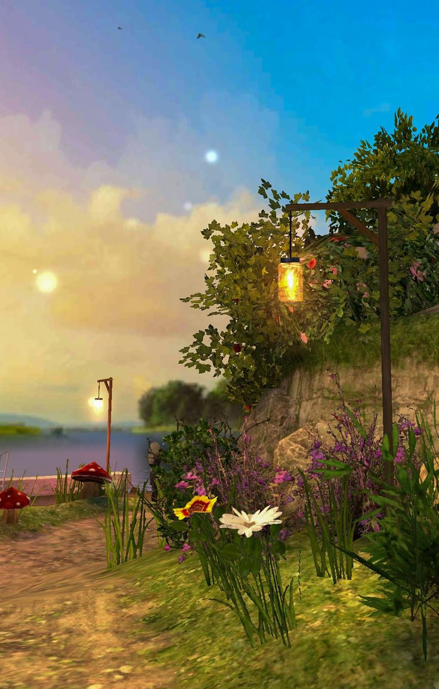
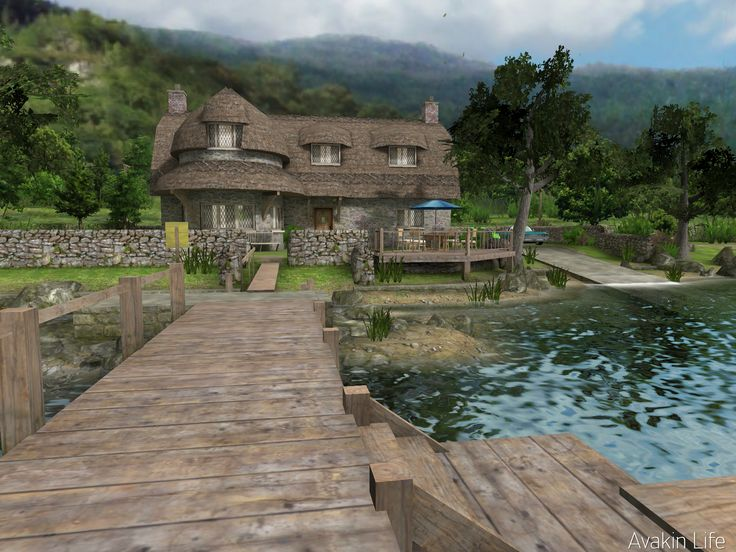
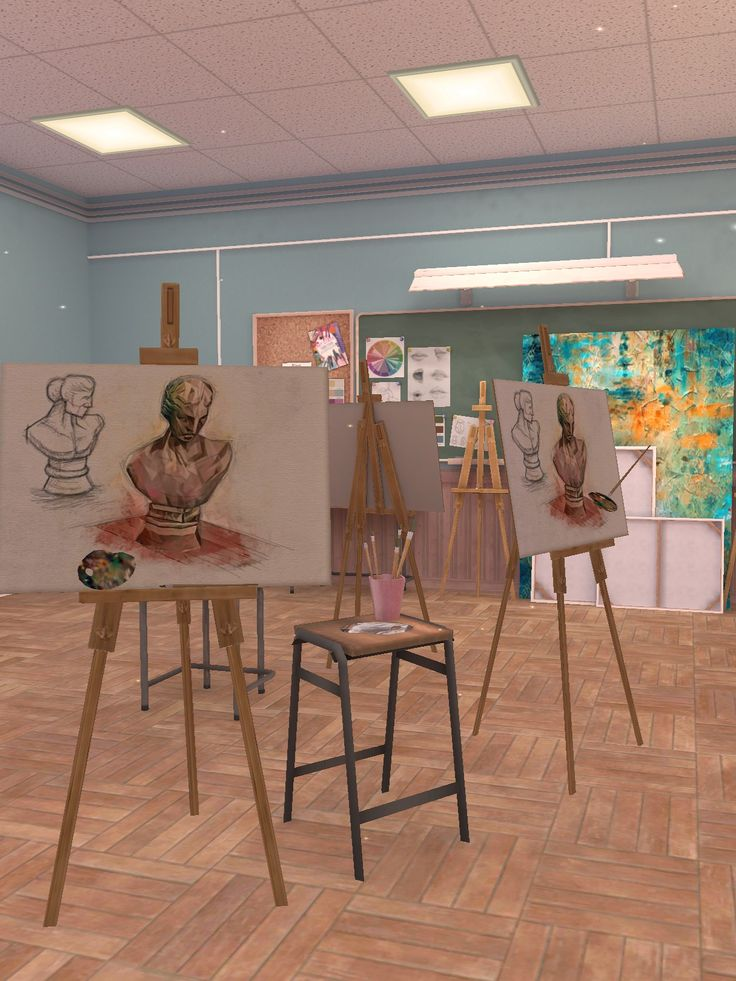
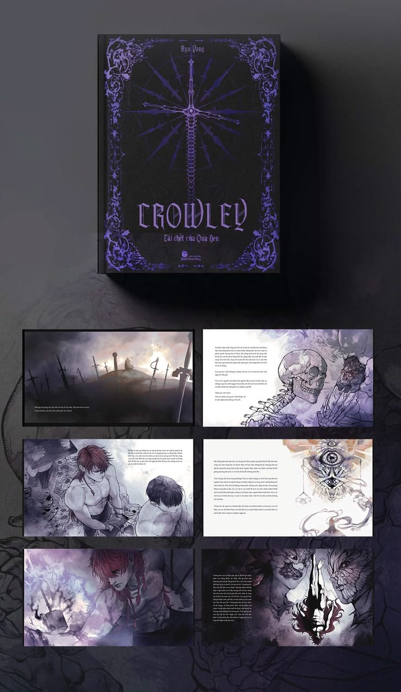
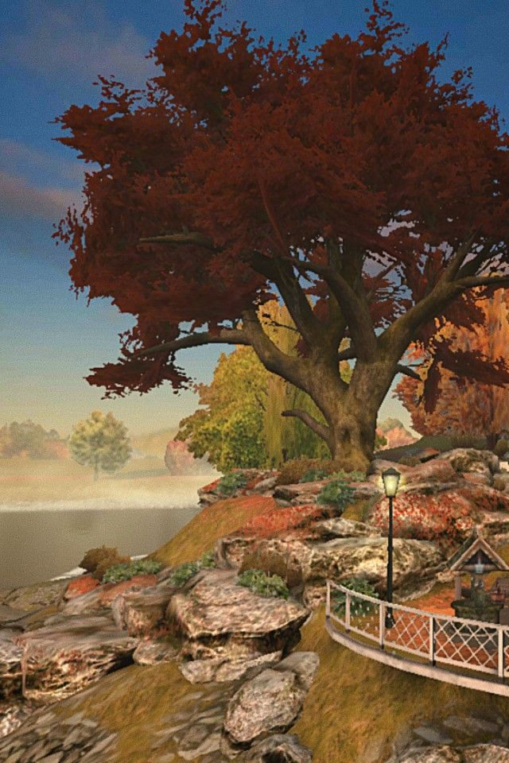

The cottage had stood at the water's edge for longer than anyone in the village could remember — its thatched roof silvered by seasons, its stone walls thick with the memory of old fires. It was here, on the fourteenth night of the dying moon, that a gathering of seven convened beneath the iron lanterns to conduct what survivors would only call "the Séance of the Dock."
Madam Vellora, who has conducted such ceremonies for three decades, arrived first. She walked the dock alone, trailing her hand in the black water, reciting the old words in a language none of the assembled could name. The water, she reported, answered before the ceremony had properly begun.
What followed — the cold, the sudden stillness of the lake, the sound like a great book being shut — has been recorded in full in the official transcript, available exclusively to Gazette subscribers at the Archives of the Hollow.
Today's Frontpage
Dispatch
The Enchanted Cliffside Garden: Mushrooms, Magic & Unexplained Light Events
Witnesses describe warm golden lanterns igniting without flame at dusk.

The Cliffside Garden, dusk — Correspondent's photograph
Residents of Mosshollow Bluff awoke to find the cliffside garden ablaze with amber light — yet no torch, no tallow, no gas lamp had been lit by any human hand. The mushrooms, they insist, were pulsing.
XIII
Unexplained events logged this fortnight
Inside This Edition
The Black Raven's Last FlightA2
Fountain of Forgotten WishesB1
Academy Exhibition ReviewC3
Autumn Rites at the Old TreeD4
The Black Carriage ReturnsE1
Séance at Lakeside ManorF6

The Lakeside Manor — photographed from the old dock, at the hour of the mist
Frontpage Feature
Exclusive
Séance at Lakeside Manor: The Night They Called Back Crowley
A fog-draped stone cottage, a crumbling dock, and seven souls who claimed they heard something answer.
"The water went still as glass. Then something moved beneath it — and it knew our names."
— Madam Vellora, Séance Account, XIV Night
✦ ✦ ✦
Featured Reports

The Studio of the Second Floor, Crowley Academy — midday session
Arts & Letters
Review
When the Canvas Refuses to Stay Empty: The Academy's Haunted Studio
Three easels, six unfinished portraits, and one very unsettled instructor.
The art academy's second-floor studio has long been regarded as the finest teaching space in the province — its herringbone floors warm with old wood, its ceilings ribbed with soft fluorescent light that flatters both students and their subjects. But this term, the studio has acquired a reputation that no curriculum can account for.
Seven students have now reported returning to find their works advanced beyond the point at which they were abandoned. The brushwork, reviewers note, is technically superior to anything the students have produced under observation. One unfinished bust of a female figure was found complete, rendered in earth tones — the identity of the subject still unidentified.
Opinion & Analysis
Opinion
Crowley and the Death of the Black Raven: What the Manuscript Really Says
Our senior archivist has spent three weeks with the text. Her conclusions are not reassuring.

"Crowley — Cái Chết Của Quạ Đen" — The recovered manuscript, photographed in the Gazette archive
The manuscript arrived wrapped in black silk, sealed with purple wax bearing an insignia our most senior archivist could not immediately place — a sword crossed through a compass rose, ringed by thorned vines. It weighed more than a book of its apparent size should. It smelled of iron.
"Crowley: Cái Chết Của Quạ Đen" — which translates, roughly, as "Crowley: The Death of the Black Raven" — is attributed to an author who signs themselves only as Ryu Vang. No such person appears in any provincial registry. The handwriting in the marginal annotations, however, is consistent across three separate exemplars held in our archive — meaning the same hand has been correcting this text for at least sixty years.
"The manuscript does not merely describe events. It anticipates them. Three of the passages we verified had not yet occurred at the time of this printing."
— Senior Archivist D. Crowne, Gazette Archive DivisionWhat makes the text remarkable is not its prose style, though the ornamented gothic lettering of the title chapter is genuinely beautiful. It is the specificity. Dates are given. Locations described in enough detail to be mapped against the current province. A chapter entitled "The Night of the Thirteen Lanterns" describes an event our garden correspondent independently reported this fortnight — six years before her dispatch was filed.
Letters to the Gazette
"I Saw the Raven"
"I have lived along the province waterfront for thirty-one years. The raven that has nested above the north gate has not moved in seven days. It does not sleep, it does not feed. It watches the road south. I believe it is waiting."
Letters to the Gazette
On the Subject of the Fountain
"My grandmother said the fountain last flowed the night a great secret was buried in the province. If it flows again, something has been unearthed."
This Week's Numbers
7
Séance Participants
40
Years the Fountain Was Silent
13
Unexplained Events
3
Unclaimed Portraits
⚜ ⚜ ⚜
Special Correspondences

The Great Red Maple — Waterfront Outcrop, Autumn. Street lamp burning at midday.
Nature & Omens
Field Report
The Autumn Oracle: Why the Red Maple Has Not Shed a Leaf in Forty Days
Botanists call it anomalous retention. The village calls it something older.
The tree stands alone at the edge of the rocky outcrop, overlooking the pale grey water that has no name in the current maps. Its leaves are the colour of dried blood — a deep arterial crimson that catches the autumn light and holds it, refusing to yield to the season's slow demand.
In forty days, not one leaf has fallen. The street lamp at the base of the path burned through two consecutive nights of full moon without being refilled. No maintenance crew reported attending to it.
Provincial botanist Dr. Seara Holst examined the tree on the twelfth day. Her preliminary report noted "no observable signs of disease, drought stress, or unusual hormonal activity" — and then, on page seven, a single handwritten addition: "The tree appears aware of being observed."
The village elders hold a different understanding. According to the Autumn Rites tradition — last formally observed forty years ago — the great red maple is considered an oracle tree, one of only three remaining in the province. It sheds its leaves, the tradition holds, only when it has finished speaking.
When we asked the eldest resident, Madam Orvaine, what it might be saying, she was quiet for a long time. Then: "It's not speaking to us. It's speaking to whatever is coming."
"It does not shed. It does not sleep. It watches the road south."
— Dr. Seara Holst, Provincial Botanical RegistryThe Great Fountain, Glass-House Conservatory — photographed the morning after first flow
City Report
Developing
The Fountain of the Forgotten Flows Again After Forty Years of Silence
Water lilies appeared in the basin before dawn. The surrounding ironwork was warm to the touch.
The great tiered fountain at the Glass-House Conservatory — silent for exactly four decades — resumed its flow at some point between the midnight bell and the first grey of dawn. No maintenance order had been filed. No workmen were assigned. The basin was bone-dry at eleven in the evening; by five in the morning it held two feet of clear water and a scatter of white water lilies that have not been cultivated there in living memory.
The conservatory's ironwork canopy — ornate arches of Victorian-style scrollwork and rose-wound columns — was found warm to the touch, as though heated from within. The roses, out of season, had opened overnight.
The Council of Waters has dispatched an inquiry. Their first communiqué, received this morning, reads in its entirety: "We are aware. We are investigating. We advise no one to drink from the basin."
✦ ⚜ ✦
Night Dispatch
✦ ✦ ✦
Reviews & Commentary
Critical Notices · The Crowley Manuscript
★★★★★
"An extraordinary piece of unsettling literature. One is never quite certain whether one is reading fiction or prophecy. Ryu Vang — whoever they are — writes with the authority of someone who has already seen what they describe."
★★★★☆
"The gothic ornamentation of the cover art is matched only by the density of the text itself. Some chapters resist being read at night. One chapter, in particular, resists being read at all — and yet one finds it has been read."
★★★★★
"I placed the book on my desk before sleeping. By morning it had opened itself to page 147. The page was about this. Do not ask me to explain further."
★★★☆☆
"I am a man of science. I have read the manuscript twice. I have begun a third reading and I am no longer certain it is the same book. I am giving it three stars because I refuse to give it five. I suspect it knows this."
⚜ ⚜ ⚜
Further Reports
Cliffside Garden, Mosshollow Bluff
Garden District
The Night the Garden Lit Itself: A Second Look at Mosshollow Bluff
A follow-up investigation into the lantern events confirms three separate episodes of spontaneous illumination. The mushrooms, which proliferate along the northern cliff face, have been collected for analysis. The lantern above the arbour gate has not required oil since the events began. A jar of what appears to be preserved sunlight was found at the base of the post — its origin, unknown.
The Red Maple Oracle, waterfront outcrop
Village Chronicle
Forty Days Without a Falling Leaf: Village Records and the Oracle Tradition
Historical records at the Province House confirm two prior episodes of "retention" by the Red Maple — once in the year before the First Council's dissolution, and once on the eve of the great flood that reshaped the province's southern border. Both times, the tree shed everything at once, on a single windless night, into the water below. The water turned red for a week. The elders, when asked to comment, declined. Separately, they began building on higher ground.
Second-floor studio, Crowley Academy of Fine Arts
Arts & Mysteries
Seven Canvases, Seven Visitors: The Academy's Unseen Artist Continues
The phenomenon at the academy's studio has now extended to seven separate canvases across the academic term. In each case, the work was abandoned mid-session; in each case, it was found complete — with a quality and confidence of execution beyond the students' current abilities. The academy's head of department, in a statement released this morning, confirmed the works have been photographed, catalogued, and submitted to the Provincial Art Authentication Board. She added, without elaboration: "We have checked the security footage. There is none."
✦ ⚜ ✦
Final Edition
Exclusive
Editorial: What All These Events Have in Common — And What It Means for the Province
Our editor considers the pattern no one in authority is willing to name.
It would be convenient to report these events in isolation. A garden that lights itself. A fountain that flows without agency. A tree that will not shed. A carriage with no driver. A studio where an unseen hand completes unfinished work. A manuscript that anticipates the future. A séance at which something answered.
Taken separately, each event admits of a local explanation. Taken together, they form something that the Province's authorities have thus far declined to address publicly — and which this publication now names directly: a pattern. Not of coincidence. Not of imagination. Of something that is paying attention to this province in a way it has not been paid attention to before.
The Crowley manuscript describes exactly this: a period it calls "the Waking," in which dormant forces reconstitute themselves through objects, locations, and acts of creation. It gives no calendar date. It gives no reassurance. It does, however, give one instruction, repeated in three separate chapters, in three separate languages: Do not pretend you did not notice.
We are not pretending. We are reporting. We will continue to do so until we are told we must stop — or until whatever is happening here makes reporting unnecessary.
"A pattern. Not of coincidence. Of something that is paying attention to this province in a way it has not been paid attention to before."
— Editor-in-Chief, The Crowley Gazette, Vol. I No. 13Notices & Announcements
Provincial Notices
ARCHIVE ACCESS
The Crowley Manuscript archive will be open to qualified researchers by appointment only. Apply in writing to the Gazette Archive Division, Section F.
FOUNTAIN ADVISORY
The Council of Waters advises the public not to drink from, bathe in, or make wishes at the Glass-House fountain until further notice.
ACADEMY NOTICE
All second-floor studio sessions at the Crowley Academy are suspended pending the results of the Provincial Art Authentication Board's review.
DOCK ADVISORY
Access to the Lakeside Manor dock is restricted between the hours of dusk and dawn, by order of the Provincial Bureau of Unusual Phenomena.
Weather & Conditions
Provincial Conditions, 18 May
NORTH GATE
Fog
Cold — Visibility: Low
WATERFRONT
Still
Wind: None — Lake: Glass
GLASS-HOUSE
Humid
Warmth: Unexplained
THE BLUFF
Lit
Source: Unknown